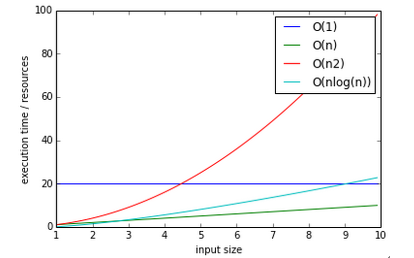
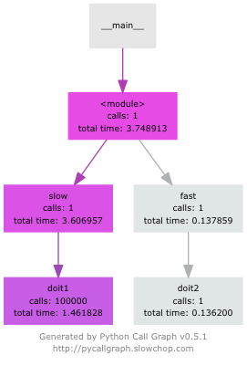

System Development with Python
Week 7 :: profiling
Joseph Sheedy
joseph.sheedy@gmail.com
Git repository: https://github.com/UWPCE-PythonCert/SystemDevelopment2015
Performance and Profiling
Today's topics
- Determining performance objectives
- Measuring performance a.k.a. profiling
- Performance optimizations
What is software profiling?
The act of using instrumentation to objectively measure the performance of your application
"Performance" can be a measure of any of the following:
- resource use (CPU, memory)
- frequency or duration of function calls
- wall clock execution time of part or all of your application
Collecting this data involves instrumentating the code. In Python, this happens at runtime.
The instrumentation creates overhead, so it has a performance cost
The output data (a "profile") will be a statistical summary of the execution of functions
An optimization strategy
- Write the code for maintainability / readability
- Test for correctness
- Collect profile data
- If it is fast enough, quit. your job here is done.
- Else optimize the most expensive parts based on profiling data
- Repeat from 2)
http://c2.com/cgi/wiki?PrematureOptimization http://c2.com/cgi/wiki?ProfileBeforeOptimizingProgrammers waste enormous amounts of time thinking about, or worrying about, the speed of noncritical parts of their programs, and these attempts at efficiency actually have a strong negative impact when debugging and maintenance are considered. We should forget about small efficiencies, say about 97% of the time: premature optimization is the root of all evil.
-Donald Knuth
Big O notation
The efficency of an algorithm is often described in “big O” notation.
The letter O is used because the growth rate of a function is also referred to as Order of the function
It describes how an algorithm behaves in terms of resource use as a function of amount of input data
O(1) - (Constant performance) Execution time stays constant regardless of how much data is supplied
Example: adding to dicts
O(n) - Time goes up linearly with number of items.
Example: scanning lists
O(n2) - Time goes up quadratically with number of items.
Example: bubble sort, worst case
O(log(n)) - goes up with the log of number of items
Example: bisection search
Reference: TimeComplexity of operations on Python containers
Big O notation
chart generated with examples/notebooks/Big_O.ipynb :
Measuring time with a stopwatch
One way to measure performance is with a stopwatch.
Start the clock when a unit of code such as a function begins, and stop it when the code returns
This is a the simplest method, and we can instrument our code to start and stop the clock.
Like most timing benchmarks, data obtained is valid only for the particular test environment (machine/OS/Python version..)
Relative timings may be valid across systems, but can also diverge
For instance a run on a machine with fast network and slow disk may produce much different results on a system with slow network and fast disk
time.clock() / time.time()
Using the time module as a profiling decorator
time.time() returns the unix system time (wall clock time)
time.clock() returns the CPU time of the current process
Precision is system dependent
See examples/timer/timer_test.py
import time
def timer(func):
def timer(*args, **kwargs):
"""a decorator which prints execution time of the decorated function"""
t1 = time.time()
result = func(*args, **kwargs)
t2 = time.time()
print "-- executed %s in %.4f seconds" % (func.func_name, (t2 - t1))
return result
return timer
@timer
def expensive_function():
time.sleep(1)
@timer
def less_expensive_function():
time.sleep(.02)
expensive_function()
less_expensive_function()timeit
Used for testing small bits of code
Use to test hypotheses about efficiency of algorithms and Python idioms
Will run the given statement many times and calculate the average execution time
Can be run from the command line:
python -m timeit '"-".join(str(n) for n in range(100))'http://docs.python.org/library/timeit.html
(See the timeit.py source)
timeit command line interface
options
- -nN: execute the given statement N times in a loop. If this value is not given, a fitting value is chosen.
- -rR: repeat the loop iteration R times and take the best result. Default: 3
- -t: use time.time to measure the time, which is the default on Unix. This function measures wall time.
- -c: use time.clock to measure the time, which is the default on Windows and measures wall time. On Unix, resource.getrusage is used instead and returns the CPU user time.
- -pP: use a precision of P digits to display the timing result. Default: 3
$ python -m timeit -n 1000 -t "len([x**2 for x in range(1000)])"timeit
timeit can also be imported as a module
http://docs.python.org/2/library/timeit.html#timeit.timeit
timeit.timeit(stmt='pass', setup='pass', timer=<default timer>, number=1000000)
The setup kwarg contains a string of Python code to execute before the loops start, so that code is not part of the test
import timeit
statement = "char in text"
setup_code = """text = "sample string";char = "g" """
timeit.timeit(statement, setup=setup_code)timeit via iPython magic
Note that the code is passed without quoting it
%timeit pass
u = None
%timeit u is None
%timeit -r 4 u == None
import time
%timeit -n1 time.sleep(2)
%timeit -n 10000 "f" in "food"Exercise
We just tried determining if a character exists in a string:
statement = "'f' in 'food'"
timeit.timeit(statement)Run timeit with an alternative statement:
statement2 = "'food'.find('f') >= 0"
timeit.timeit(statement2)Which is faster? Why?
Getting more detailed with Profiling
A profiler takes measurements of runtime performance and summarizes results into a profile report
Reported metrics could include
- Memory used over time
- Memory allocated per function
- Frequency of function calls
- Duration of function calls
- Cumulative time spent in subfunction calls
Python's builtin profiler
Python comes with a few profiling modules
- profile - older, pure Python. If you need to extend the profiler, this might be good. Otherwise, it's slow.
- cProfile - same API as profile, but written in C for less overhead
- hotshot - deprecated, still used sometimes. Emphasis on low overhead.
cProfiler
Can be run as a module on an entire application
python -m cProfile [-o output_file] [-s sort_order] integrate_main.py
11111128 function calls in 8.283 seconds
Ordered by: standard name
ncalls tottime percall cumtime percall filename:lineno(function)
1 0.000 0.000 0.000 0.000 integrate.py:1()
11111110 2.879 0.000 2.879 0.000 integrate.py:1(f)
[....] - ncalls: number of calls
- tottime: total time spent in function, excluding time in sub-functions
- percall: tottime / ncalls
- cumtime: total time spent in function, including time in sub-functions
- percall: cumtime / ncalls
- filename:lineno: location of function
A more complex profile
The amount of data in the previous example is readable, so now we'll look at the output from a more complex application: examples/pygame/swarm.py
This program consists of calculating the gravitational acceleration of bodies around a central mass and displaying them
There are two major consumers of resources: one is our own code calculating the physics, the other is pygame drawing the results on the screen
Our goal is to figure out whether the major bottleneck is in our own logic or in the pygame operations
A simple way to get data for our own code is
python -m cProfile swarm.py &> /tmp/output.txt
grep swarm.py /tmp/output.txt
cProfiler
Can run a single line of code similar to timeit:
cProfile.run('None is None')
Or from our old demo app examples/wikidef :
cProfile.run("Definitions.article('python')")
Analyzing profile data
output to a binary dump with -o <filename>
While doing performance work, save your profiles for comparison later
This helps ensure that any changes do actually increase performance
A profile dump file can be read with pstats
python -m pstatspstats
python -m cProfile -o prof_dump ./define.py Robot
python -m pstats
% read prof_dump
# show stats:
prof_dump% stats
# only the top 5 results:
prof_dump% stats 5
# sort by cumulative time:
prof_dump% sort cumulative
# shorten long filenames for display:
prof_dump% strip
# show results again:
prof_dump% stats 5pstats
pstats also has method calls:
import pstats
p = pstats.Stats('prof_dump')
p.sort_stats('calls', 'cumulative')
p.print_stats()
# Output can be restricted via arguments to print_stats().
# Each restriction is either an integer (to select a count of lines),
# a decimal fraction between 0.0 and 1.0 inclusive (to select a percentage of lines),
# or a regular expression (to pattern match the standard name that is printed.
# If several restrictions are provided, then they are applied sequentially.
p.print_stats(5)
p.print_stats('./api.py', 4)
Analyzing profile data
Inspect only your local code with regular expression syntax:
import pstats
prof = pstats.Stats('prof_dump')
prof.sort_stats('cumulative')
prof.print_stats('^./[a-z]*.py:')
qcachegrind / kcachegrind
profiling tool based on Valgrind
a runtime instrumentation framework for Linux/x86
Can be used with Python profile data with a profile format conversion
Doesn't give all the information that a native valgrind run would provide
# convert python profile to calltree format
pip install pyprof2calltree
python -m cProfile -o dump.profile integrate_main.py
pyprof2calltree -i dump.profile -o dump.callgrind
http://kcachegrind.sourceforge.net/cgi-bin/show.cgi/KcacheGrindCalltreeFormat
Profiling C extensions
Google Performance Tools can be used to profile C extensions
Just call ProfilerStart and ProfilerStop with ctypes around the code you want to profile
import ctypes
libprof = ctypes.CDLL('/usr/local/lib/libprofiler.0.dylib')
libprof.ProfilerStart('/tmp/out.prof')
import numpy
a=numpy.linspace(0,100)
a*=32432432
libprof.ProfilerStop('/tmp/out.prof')
# convert the profile to qcachegrind's format with google's pprof tool
$ pprof --callgrind ~/virtualenvs/uwpce/lib/python2.7/site-packages/numpy/core/multiarray.so out.prof > output.callgrind
$ qcachegrind output.callgrind
Run Snake Run
A graphical profile viewer for Python
Functions are represented by a SquareMap in which square size is proportional to time spent in the function

Run Snake Run installation
runsnake dump.profile
line profiler
Thus far, we've seen how to collect data on the performance of functions as atomic units
line_profiler is a module for doing line-by-line profiling of functions
line_profiler ships with its own profiler, kernprof.py. Enable line-by-line profiling with -l
Decorate the function you want to profile with @profile and run
# the -v option will display the profile data immediately, instead
# of just writing it to <filename.py>.lprof
$ kernprof.py -l -v integrate_main.py
# load the output with
$ python -m line_profiler integrate_main.py.lprof
pycallgraph
Sometimes a quick view of the call graph will help
Python Call Graph is a Python module that creates call graph visualizations
pycallgraph graphviz ./integrate_main.py
memory profilers
There aren't any great ones
one option is heapy, which comes with Guppy, a Python environment for memory profiling
from guppy import hpy; hp=hpy()
hp
hp.doc.heap
hp.heap()
%run define.py Robot
hp.heap()
Others
boosting Python performance
- Overhead in function/method runtime lookup can be significant for small frequent calls.
- inlining code or caching function references might help. See examples/data_aggregation/agg.py
- Python string handling idioms: use "".join(list_of_strings) rather than sequential calls to += See examples/strings/str_concat.py and str_comprehensions.py
- using list comprehensions, generator expressions, or map() instead of for loops can be faster (see data_aggregation/loops.py)
- Rewrite expensive code as C modules. Use ctypes, Cython, SWIG, ...
- Leverage existing domain specific C extension libraries, for instance Numpy for fast array operations.
Numpy
A fast array library
Numpy provides mechanisms to create and manipulate large arrays in C with a Pythonic interface
Advantages:
- Faster
- Less memory
- Data typing
- N-d array slicing
- Vector operations
Many projects involving gridded data use numpy arrays:
- PyOpenGL
- GDAL (Geospatial Data Abstraction Library)
- NetCDF4 (file format for large gridded data sets)
- Shapely (for GIS work)
- PIL (Python Image Library)
Numpy
Numpy arrays can be created by passing a sequence to numpy.array(), or generated from scratch with methods like zeros(), empty(), arange(), ...
Numpy arrays can share data
Creating a slice of an array generates a reference to that slice, it does not copy the data, saving memory and improving performance
import numpy
# create a 2D array
x = numpy.array(((1,2,3), (4,5,6), (7,8,9)))
# take a vertical slice
y = x[:,1]
# changing a value in x..
x[0][1] = 99
# changes the value in y
print y[0]
Fast serialization with numpy.tofile() / numpy.fromfile() – Just the raw bytes, no metadata
Numpy
Operations on a numpy array
Broadcasting: specifies an operation to broadcast across the array. e.g.
my_array*3 will broadcast the (*3) operation on each element, at the C level, not the Python level.
See examples/numpy/matrix.py
Numpy has a large number of methods for operating on the arrays, for slicing, vector calculations, and statistics
Exercise
examples/numpy/images.py contains a script to manipulate an image's pixel data with numpy
Before saving a new copy of the image, mirror the image either horizontally or vertically
Managing memory
Don’t forget memory:
Processors are fast
It can take longer to push the memory around than do the computation
So keep in in mind for big data sets:
Use the right data structures
Use efficient algorithms
Use generators, rather than lists: xrange, ...
Use iterators to pull in the data you need from databases, sockets, files, ...
Questions?
/